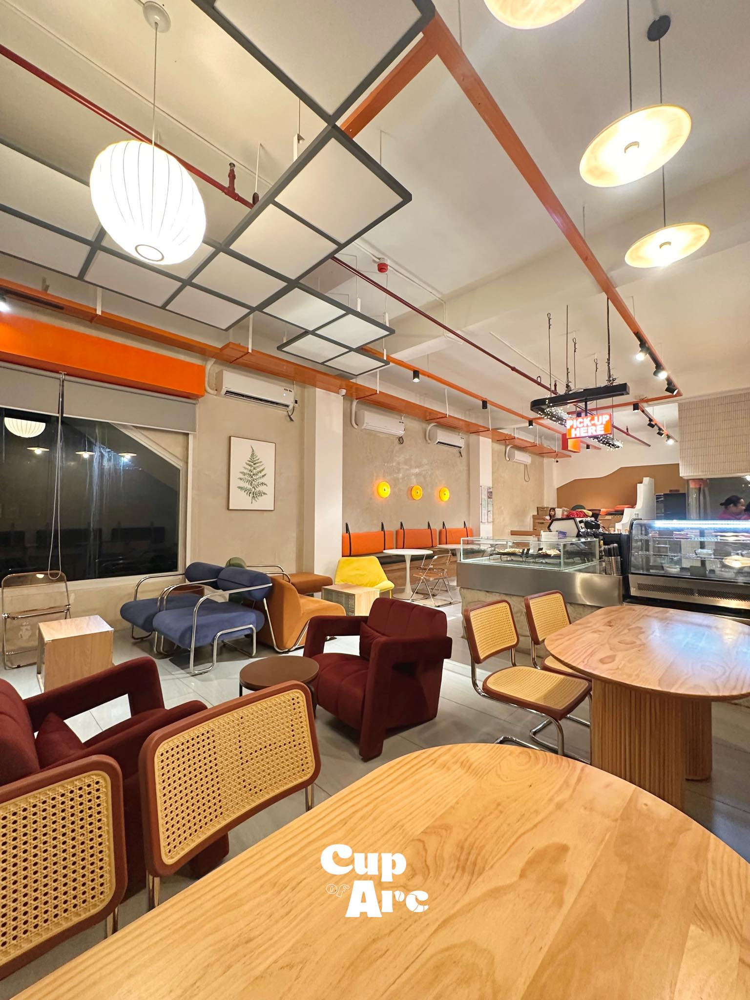
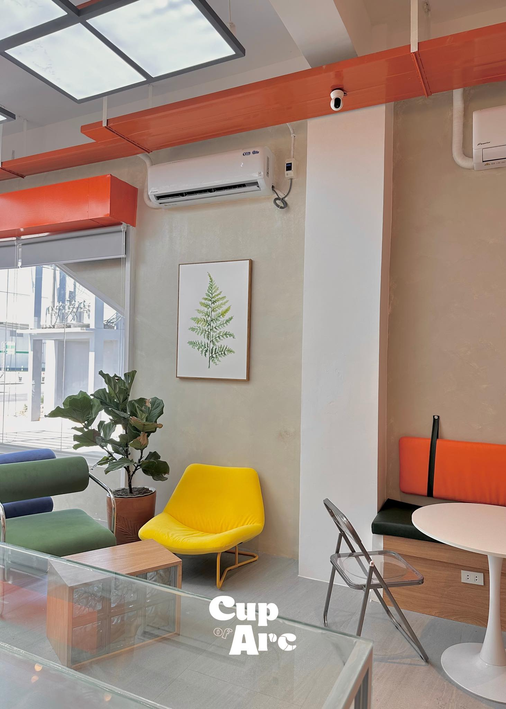
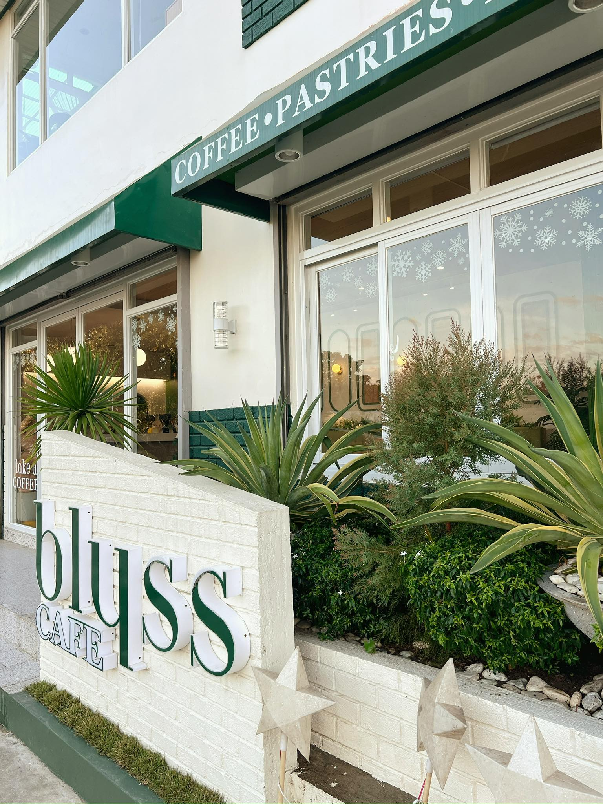
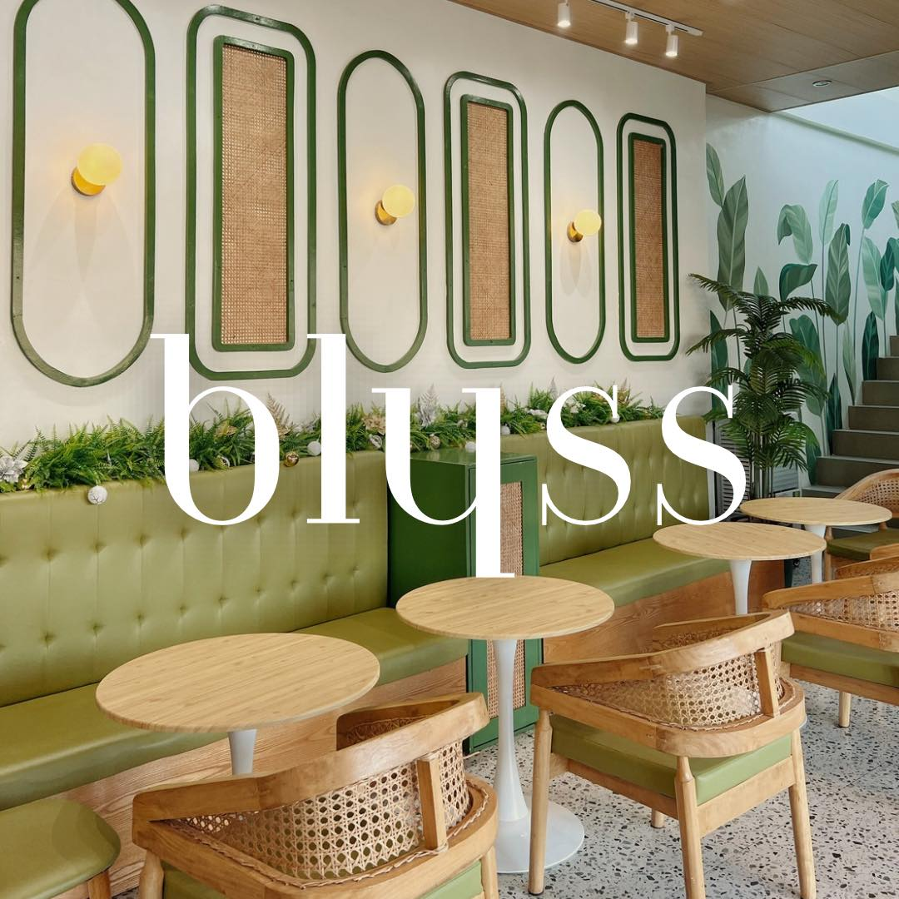

Explore the best cafés in Urdaneta City, perfect for coffee lovers, friends, and creatives alike.


Cup of Arc is a vibrant and creative local coffee shop in Urdaneta City, Pangasinan. Known for its artistic vibe and fun atmosphere, it’s perfect for casual meet-ups or solo coffee breaks.
📍 Location: Bypass Road, Barangay Nancayasan, HMC Arcade Building, near Shell and 7-Eleven, Urdaneta City, Pangasinan
🕒 Opening Hours: Monday–Friday & Sunday: 10:00 AM – 11:00 PM; Saturday: 10:00 AM – 12:00 AM
✨ Café Experience: Playful interior, cozy layout with bleacher-style lounging area, perfect for students, friends, or creative café-goers.
☕ What They Serve: Classic coffee, espresso blends, oat-based lattes (pumpkin spice, sea salt cream), specialty drinks (toffee butterscotch, matcha), non-coffee options, desserts, and light snacks.
🌟 Why People Visit: Fun and photo-worthy atmosphere, creative and flavorful drinks, ideal for friends, students, or creative meetups, with both coffee classics and unique twists.


Blyss Cafe is a charming and aesthetic coffee shop along Anonas E Street. Known for its modern and minimalist design, it’s a favorite spot for students, friends, and coffee lovers looking to relax and enjoy quality drinks.
📍 Location: Anonas E Street, Urdaneta City, Pangasinan, Philippines
✨ Café Experience: Clean, modern interior with a relaxing atmosphere. Spacious seating makes it perfect for casual hangouts, study sessions, or solo coffee breaks. Many visitors enjoy its Instagram-worthy ambiance.
☕ What They Serve: Specialty coffee drinks, flavored lattes, sea salt lattes, iced coffee, tea, desserts, and light snacks.
🌟 Why People Visit: Modern aesthetic, great place to study or relax, quality coffee and desserts, and comfortable space for friends and groups.